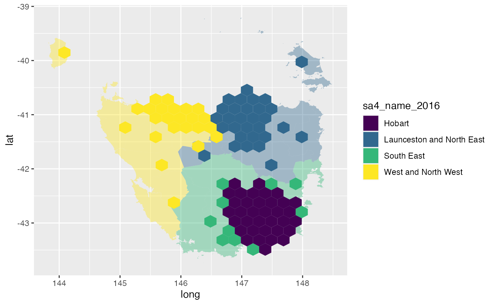

Tasmania is the southern-most state of Australia, it has one large land mass and several smaller islands.
We will use the Australian Bureau of Statistics’ ESRI shape files to build our map.
The set has been filtered for only Tasmanian areas. The data set of Tasmanian Statistical Areas at level two has been provided as a package data set, ?tas_sa2.
The function create_centroids finds the central points of the polygons provided as an argument.
# Find the longitude and latitude centroid for each region or area centroids <- create_centroids(tas_sa2, sf_id = "SA2_NAME16") #> Warning in st_centroid.sfc(., of_largest_polygon = largest): st_centroid does #> not give correct centroids for longitude/latitude data #> Linking to GEOS 3.5.0, GDAL 2.2.2, PROJ 4.9.2 #> Warning: st_crs<- : replacing crs does not reproject data; use st_transform for #> that #> Warning: st_crs<- : replacing crs does not reproject data; use st_transform for #> that
To tessellate correctly, all the hexagons must be evenly spaced. This function creates a grid of possible locations for the polygons.
grid <- create_grid(centroids = centroids, hex_size = 0.2, buffer_dist = 1.2)
The sugarbag package operates by creating a grid of possible hexagons to allocate electorates. The buffer extends the grid beyond the geographical space, this is especially useful for densely populated coastal areas or cities, such as Brisbane and Sydney in this case, Hobart.
Each polygon centroid will be allocated to the closest available hexagon grid point. The capital cities data set will be used to preserve neighbourly relationships. The allocate function requires two inputs, the centroids and the grid.
# Allocate the centroids to the hexagon grid # We have the same amount of rows, as individual regions hex_allocated <- allocate(centroids = centroids, sf_id = "SA2_NAME16", hex_grid = grid, hex_size = 0.2, # same size used in create_grid hex_filter = 10, focal_points = capital_cities, # same column used in create_centroids width = 30, verbose = TRUE) #> Finding closest point in focal_points data set. #> Allocating centroids, in order of distance to closest focal point.
The function fortify_hexagon assists in plotting. We now have 6 points per region, one for each point of a hexagon. Connecting these points will allow actual hexagons to be plotted.
The additional demographic information or data can now be added. This can be used to allow plots to be coloured by region.
For animations to move between geography and hexagons the sf_id must match, there also needs to be an identifier to separate the states to animate between for gganimate.
hexagons <- hex_allocated %>% fortify_hexagon(hex_size = 0.2, sf_id = "SA2_NAME16") %>% left_join(., tas_sa2) %>% mutate(poly_type = "hex") #> Joining, by = "SA2_NAME16" polygons <- fortify_sfc(tas_sa2) %>% mutate(poly_type = "geo") #> Warning: Problem with `mutate()` input `geom`. #> ℹ The `x` argument of `as_tibble.matrix()` must have unique column names if `.name_repair` is omitted as of tibble 2.0.0. #> Using compatibility `.name_repair`. #> This warning is displayed once every 8 hours. #> Call `lifecycle::last_warnings()` to see where this warning was generated. #> ℹ Input `geom` is `purrr::map(...)`. #> Warning: The `x` argument of `as_tibble.matrix()` must have unique column names if `.name_repair` is omitted as of tibble 2.0.0. #> Using compatibility `.name_repair`. #> This warning is displayed once every 8 hours. #> Call `lifecycle::last_warnings()` to see where this warning was generated. ggplot(mapping = aes(fill = SA4_NAME16)) + geom_polygon(data = polygons, aes(x=long, lat, group = interaction(SA2_NAME16,polygon)), alpha = 0.4) + geom_polygon(data = hexagons, aes(x=long, lat, group = interaction(SA2_NAME16))) + scale_fill_viridis_d()

hexagon_points <- hexagons %>% select(SA4_NAME16, SA2_NAME16, SA2_NAME16, long, lat, poly_type) %>% left_join(polygons %>% distinct(SA2_NAME16, polygon), by = "SA2_NAME16") polygon_points <- polygons %>% select(SA4_NAME16, SA2_NAME16, SA2_NAME16, long, lat, polygon, poly_type) animate_tas <- bind_rows(hexagon_points, polygon_points) %>% left_join(homeless) #> Joining, by = "SA2_NAME16" animate_tas %>% ggplot(aes(x=long, y=lat, group = interaction(polygon, SA2_NAME16))) + geom_polygon(aes(fill = SA4_NAME16)) + geom_polygon(data = polygon_points %>% select(-poly_type), fill = "grey40", alpha = 0.05) + coord_equal() + theme_void() + guides(fill = guide_legend(title = NULL)) + theme(legend.position = "bottom") + facet_wrap(~poly_type) + scale_fill_viridis_d()
library(gganimate) animation <- animate_tas %>% ggplot(aes(x=long, y=lat, group = interaction(polygon, SA2_NAME16))) + geom_polygon(aes(fill = SA4_NAME16)) + geom_polygon(data = polygon_points %>% select(-poly_type), fill = "grey40", alpha = 0.05) + coord_equal() + theme_void() + guides(fill = guide_legend(title = NULL)) + theme(legend.position = "bottom") + transition_states(states = poly_type) + scale_fill_viridis_d() animated <- animate(animation, fps = 10, duration = 15, start_pause = 5, end_pause = 5, rewind = FALSE) anim_save(filename = "tasmania_animation.gif", animated)